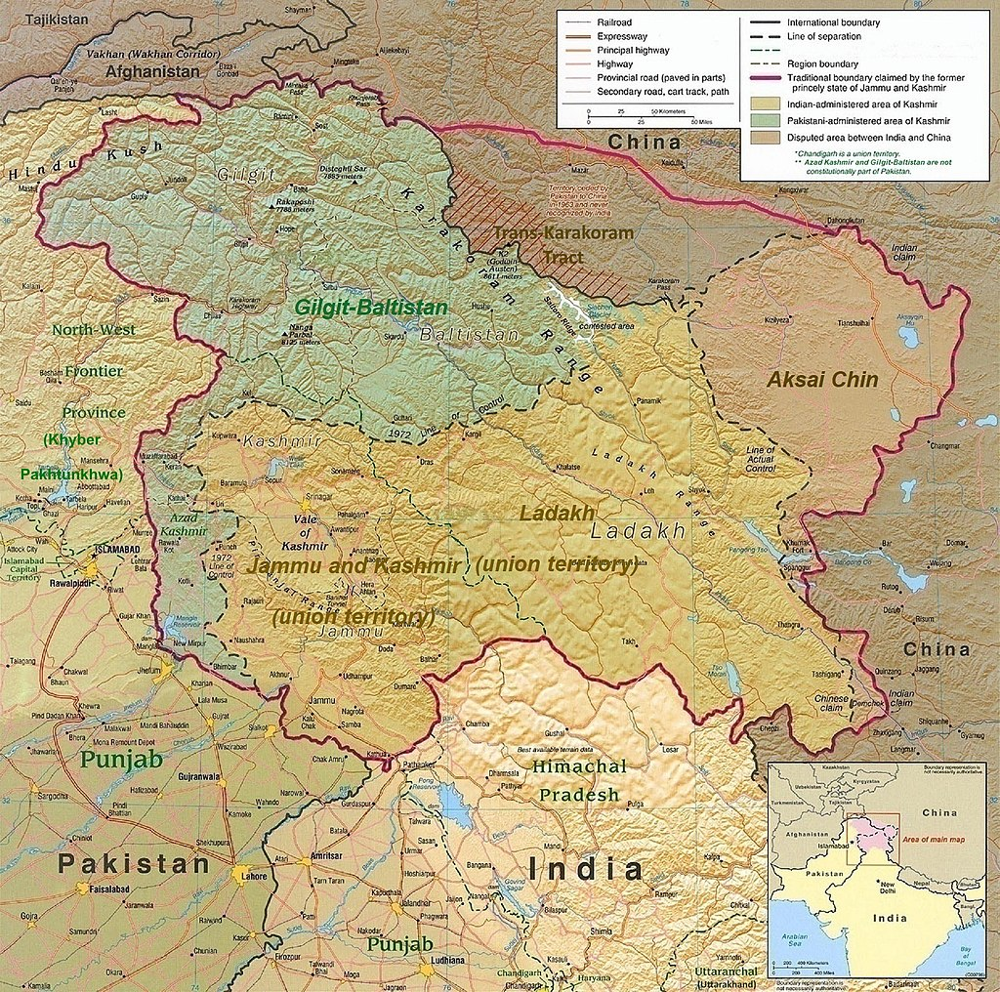
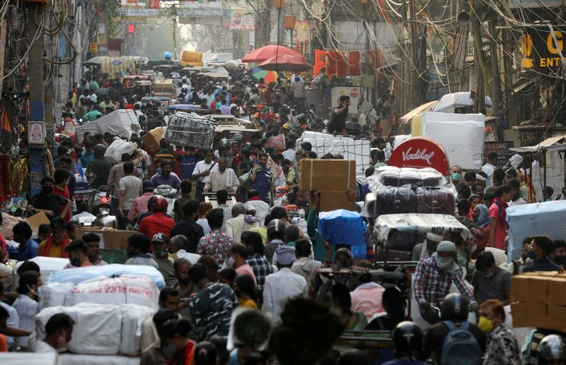

índia x Paquistão

Fonte: https://en.wikipedia.org/wiki/Kashmir#/media/File:Kashmir_Region_November_2019.jpg
área da Caxemira
A região da Caxemira abrange uma área de 180 mil km², tendo contato com a China ao leste, o Paquistão ao oeste e a índia ao sul. O relevo é extremamente montanhoso, sendo majoritariamente ocupada pelos Himalaias, com vegetação de florestas tropicais, florestas temperadas e tundras. área com importantes recursos naturais, é BANHADA PELO RIO GANGE E INDO, dois importantes rios para o Paquistão e a índia, respectivamente.
Atualmente a economia é baseada na agricultura, principalmente na produção de arroz, cultura advinda do povo nativo que plantava na base dos montes. Milho, trigo e cevada também são plantados, assim como produtos favorecidos pela região, como aspargos, beterraba e repolho. Conhecida no mundo inteiro, a Casimira, ou Lã da Caxemira, é um tecido feito do pelo do cabra-da-caxemira, grande atividade econômica da região.

Fonte: https://en.wikipedia.org/wiki/Kashmir#/media/File:Pahalgam_Valley.jpg
Características dos Países Envolvidos
índia
Com o sexto maior PIB mundial, a índia é um importante composto da economia mundial. 28% do PIB é formado do setor agrícola, enquanto o setor de serviços ocupa 54% e a indústria 18%. A população é a SEGUNDA MAIOR DO MUNDO, com aproximadamente 1,4 bilhões de habitantes.
A produção agropecuária é composta principalmente por arroz, trigo, algodão, chá e cana-de-açúcar. Já a indústria é formada principalmente pelas áreas de têxtil, maquinaria, aço, transportes e mineração. A exportação se caracteriza pelos derivados do petróleo, produtos têxteis e jóias preciosas.

Fonte: https://www.istoedinheiro.com.br/economia-da-india-cresce/
Paquistão
Possui a sexta maior população do mundo, com um PIB de 475 bilhões de dólares. Grande desigualdade econômica no país, atingindo uma taxa de pobreza com o valor de 28%. Desenvolvimento econômico rápido e expressivo para um país emergente, fez isso através de uma transição do setor agrícola para o setor de prestação de serviços.
A agricultura hoje representa 20% do PIB, enquanto serviços representam 53% dos quais 30% é o comércio. Foi o 6º maior produtor de lã em 2019, atualmente sendo um dos grandes produtores de cana-de-açúcar, algodão e manga. Produz também milho, batata, arroz, cebola e tâmara. Suas maiores exportações foram arroz, açúcar e carne bovina.
História do Conflito
A Caxemira era uma região fortemente dominada pela Inglaterra como uma colônia. Era controlada pela empresa da Companhia das índias Orientais, que tentava influenciar culturalmente uma gama diversa de etnias, com destaque dos muçulmanos e hindus. A presença de um vice-rei era o que marcava a autoridade inglesa na colônia. Esse domínio durou entre 1858 e 1947, e durante esse tempo era fonte de recursos importantes, como especiarias e solos férteis. Os muçulmanos eram extremamente contra a invasão cultural no seu território, pois ameaçavam sua forma de vida e valores. Enquanto isso, os hindus se adaptaram à mudança, fazendo parte de estruturas inglesas e recebendo educação.
Com o tempo, o povo hindu percebe que estava traindo a causa de seu povo, e assim a educação dada pelos ingleses se volta contra eles. Surge a FIGURA DE GANDHI, o líder da revolução indiana. Tal qual aliou temporariamente todo o povo indiano, sob uma postura pacifista que procurava tirar o poder dos ingleses. Greves, desrespeito às leis e desobediência marcaram o processo.
Devido ao enfraquecimento da Inglaterra por causa da Segunda Guerra e a revolução causada por Gandhi, um processo de descolonização começa, levando a um tratado de Partição e Independência da Caxemira e uma separação entre o povo indiano do povo inglês. O território é dividido entre índia e Paquistão, abrigando populações Hindus e Muçulmanas respectivamente. Um pedaço também é dominado pela China.
Quem foi Mahatma Gandhi?

A figura de Gandhi começou a se formar numa viagem para a áfrica do Sul em 1893, quando teve contato com o forte racismo do país contra os indianos. Além da legislação que forçava os indianos a serem segregados, assim como negros e outras menorias raciais, aconteceu um caso com o ativista em sua viagem: Por ser indiano, não foi aceito na primeira classe de um trem, mesmo com a passagem, e por não aceitar viajar na terceira classe, foi expulso da locomotiva. Diante disso, começou a se formar um ativista com estratégia pacífica.
Voltando para a índia, voltou a manifestar suas influências apenas após a Primeira Guerra Mundial, com o novo objetivo de desvencilhar seu país do domínio inglês. Gandhi usou novamente seu princípio de Satyagraha, que se resumia no PROTESTO PACíFICO de forma que o agressor tomasse consciência de seus atos. “Mahatma” é um apelido dado pelos indianos à Gandhi que significa “grande alma”, devido à sua postura proposta pacífica contra a colonização e outros tipos de conflitos.
Em contraponto à isso, Gandhi foi acusado por estudos de ter uma postura racista contra negros Sul-Africanos e ter uma postura misógena principalmente com sua esposa.
Gandhi foi assassinado em 1949, após a separação da índia e do Paquistão, por um indiano chamado Nathuram Godse que atirou no ativista.
Atualmente
Sem a identidade Caxemir e a imigração, a região ficou muito heterogênea, fazendo uma impossibilidade de se unificar como uma nação e intensificando o conflito.
AS FRONTEIRAS SãO EXTREMAMENTE VOLáTEIS, assim foram militarizadas pelos países e se tornaram uma área de tensão, com risco de conflito direto. A região é nascente de vários rios importantes, com destaque do rio Indo, importante para a índia, isso adiciona uma questão hídrica no conflito. A grande maioria da Caxemira é muçulmana, isso faz com que o Paquistão almeje a região, em contrapartida, a índia afirma sua posse devido à compra da região feita no século XIX. Existem muitos conflitos internos na Caxemira Indiana, por causa que grande parte da população é muçulmana e apoia a anexação do território no Paquistão.
Problemas nos Dias Atuais

A atual situação da Caxemira é de conflito constante, violência civil e guerrilhas internas. A POPULAçãO MUçULMANA REBELDE ATUA DENTRO DA CAXEMIRA INDIANA com o objetivo de enfraquecer o governo e manifestar para a anexação da região com o Paquistão. Ataques são comuns não só por parte dos muçulmanos mas também a própria força indiana, que atua de forma opressora na região conflituosa.
Cerca de 600 mil soldados indianos estão presentes na Caxemira Indiana, com registros de ações de assassinato, estupro e tortura. Assim como terroristas e soldados advindos da região paquistanesa fazem o mesmo contra o povo indiano da Caxemira. Além desse impasse, a taxa de desemprego e pobreza é alarmante, isso corrobora com as crises sociais e com o conflito, pois gera novos terroristas ou atuantes criminosos.
Há uma acusação contra o Paquistão de usar campos de treinamento criados na guerra fria para o treino de terroristas e soldados que são enviados para o conflito. Além disso, acontece uma vinda de grandes quantidades de armas da região muçulmana para a região indiana, acredita-se que essas são para alimentar os grupos extremistas violentos e fomentar ainda mais a guerra.
Em escala mundial, a maior preocupação é o risco de guerra existente. A possível guerra entre os dois países teria um resultado catastrófico devido ao ARMAMENTO NUCLEAR de cada um. Ambos possuindo cerca de 140 ogivas nucleares, a capacidade de destruição desse armamento é considerado o sexto maior no quesito de armas atômicas, e em caso de guerra poderia levar à destruição dos dois países, países vizinhos ou até de áreas do globo. A radiação incidente destruiria grande parte da vegetação, mataria animais e aumentaria significamente a frequência de câncer na população do mundo.